Deep-water currents: three mechanism tests
Monochromatic waves produce banded jets driven predominantly by the resolved, nearly two-dimensional eddies. The travelling packet produces a surface countercurrent driven predominantly by three-dimensional stresses. Neither experiment establishes broad PV homogenization or a sharp spectral barrier. The monochromatic case does provide evidence for backward-propagating vortex waves and transfer toward larger horizontal scales.
These are two different initial-value problems, evaluated separately with their own matched no-wave controls. All simulations are complete. This page reports analysis of existing output; it introduces no new simulations.
What the data support
| Test | Monochromatic deep-water waves | Travelling deep-water packet |
|---|---|---|
| Have currents formed? | Yes: banded jets at both resolutions. Refined mean-current energy is 26.7% of total Lagrangian kinetic energy; only 1.54% remains transverse-dependent. | Yes: a wave-induced surface countercurrent. About 68% of Eulerian kinetic energy remains transverse-dependent. This is not the same nearly 2D banded-jet state. |
| PV homogenization | Broad staircase not supported. Upper 0.25 m mean-PV variance finishes at 0.989 of its initial value; the mean gradient remains close to its initial profile. Small changes are sensitive to resolution and the numerical PV balance. | Upper-layer homogenization contradicted by the measured trend. Mean-PV variance grows to 5.17 times its initial value, while the control falls to 0.281. The reduced PV also has substantial 3D sources. |
| Inverse transfer / spectral barrier | Inverse horizontal transfer supported; a sharp barrier is unestablished. Low-horizontal-wavenumber transfer has the same sign at both resolutions. A radial constant-flux range and a clean wave-induced exclusion region are not demonstrated. | No demonstrated 2D barrier. The angular spectrum closely resembles the control after removing the packet-only response. Self-transfer of the transverse mean excludes the dominant 3D dynamics. |
| Momentum-flux mechanism | Resolved eddy driving supported. Eddy-stress convergence explains approximately 100% of the final jet-profile change; 3D stress opposes mean-energy growth. Vortex-wave phase propagation is supported, but a source–radiation–absorption explanation of jet location remains untested. | 3D stress driving supported. It explains approximately 102% of the paired wave-induced countercurrent, with smaller opposing terms. The 2D vortex-wave radiation argument is not established as the driver. |
Percentages in the last row are projections of each accumulated momentum contribution onto the observed profile change. They can exceed 100% when other terms oppose the change; they are not fractions of an absolute stress norm. These three proposed mechanisms are not mutually exclusive.
First check: the currents are present
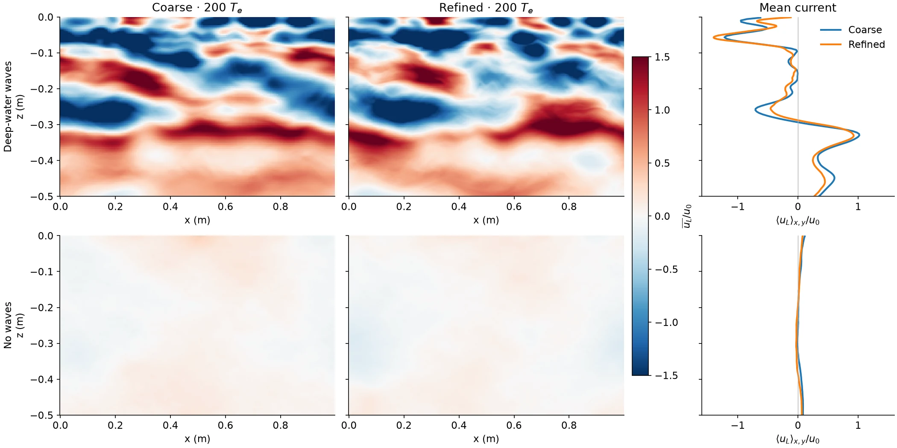
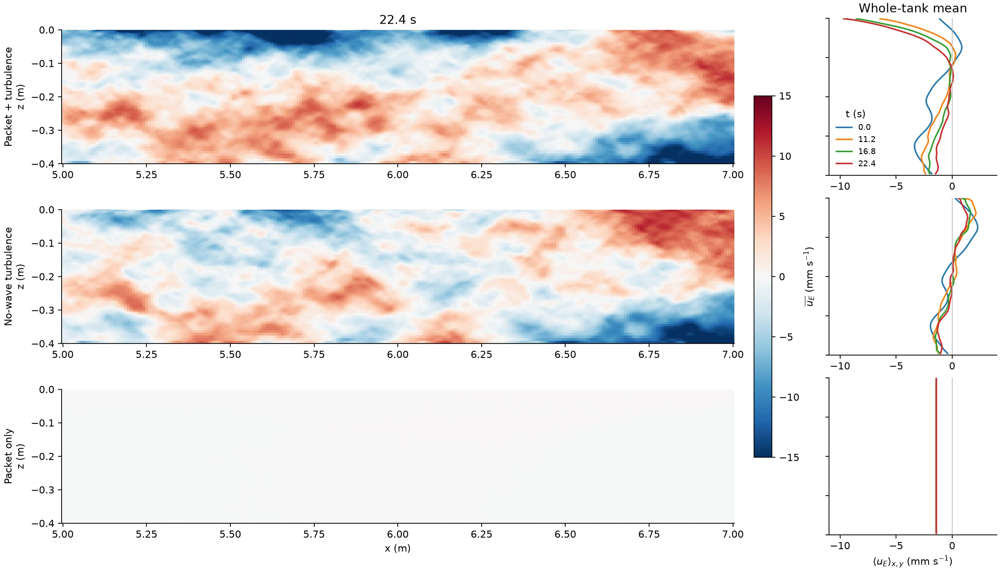
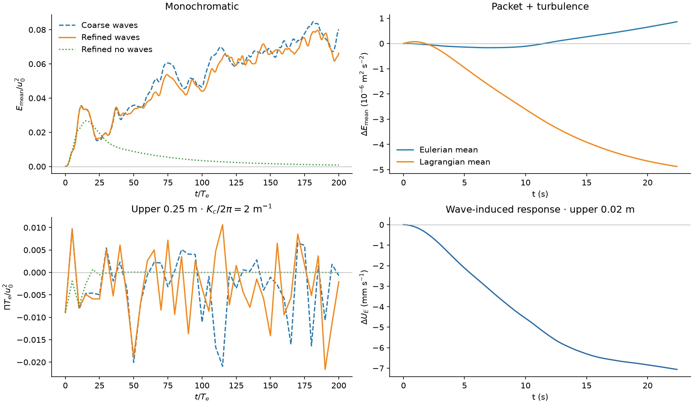
Momentum: identify which stress actually builds the current
The exact reconstruction of a mean-momentum budget is an accounting check. The useful result is the relative contribution of separately recorded physical terms, and whether that result survives refinement.
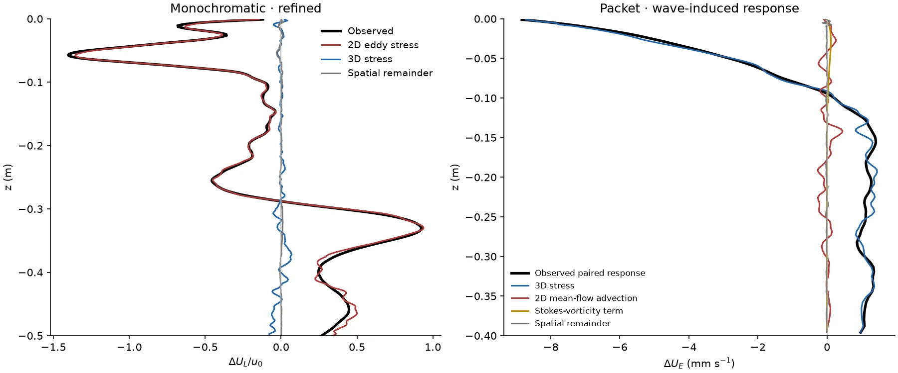
Monochromatic: the resolved eddy term contributes 100.21% of the final-profile change, 3D stress −0.98%, and the spatial remainder +0.77%. The latter falls from 2.00% at coarse resolution. Independently, the exact endpoint allocation of mean kinetic-energy growth gives 111.70% from resolved eddies, −12.85% from 3D stresses, and +1.15% from the spatial remainder. This supports resolved eddy transport feeding the jets, with 3D fluctuations predominantly damping them.
Packet: the paired surface response peaks at −8.84 mm s⁻¹. The profile projections are 102.11% from 3D stress, −0.90% from resolved 2D advection, −1.23% from the Stokes–vorticity term, and +0.013% from the spatial remainder. This identifies the dominant carrier of the mean response as the transverse-dependent flow.
The distinction between Eulerian and Lagrangian velocity matters physically. In the turbulent packet run, Eulerian mean kinetic energy increases by 8.62 × 10⁻⁷ m² s⁻², but Lagrangian mean kinetic energy decreases by 4.88 × 10⁻⁶ m² s⁻². The 3D stress contribution to that Lagrangian change is −5.50 × 10⁻⁶ m² s⁻². Thus the countercurrent is compatible with relaxation of Lagrangian shear; it is not evidence of the same up-gradient Lagrangian jet-energy production seen in the monochromatic case.
The packet includes vertical Stokes velocity and explicit time dependence. The assertion that the vortex force has no along-wave component applies to a purely horizontal monochromatic Stokes profile; it cannot simply be transferred to this packet. Whole-tank pressure cancellation follows from periodicity. Pressure remains in the local diagnostic and must be retained in any interpretation confined to x = 5–7 m.
PV: no broad homogenized staircase in the jet layer
We use the explicit sign convention q = ∂zūE − ∂xw̄E, with the overbar denoting the transverse average, and Q = ⟨q⟩x. This is the Eulerian y-vorticity of the reduced field. It obeys a scalar transport law in the corresponding ideal 2D limit; in these 3D runs the transverse stresses supply additional terms.
The initial backgrounds are different. The monochromatic run starts with zero Lagrangian mean, giving Q₀ = −∂zuˢ. The original packet initialization instead adds Stokes drift to a specified Eulerian turbulent field. Its initial reduced PV must be measured from that field; it is not obtained by assigning the monochromatic background −∂zuˢ.
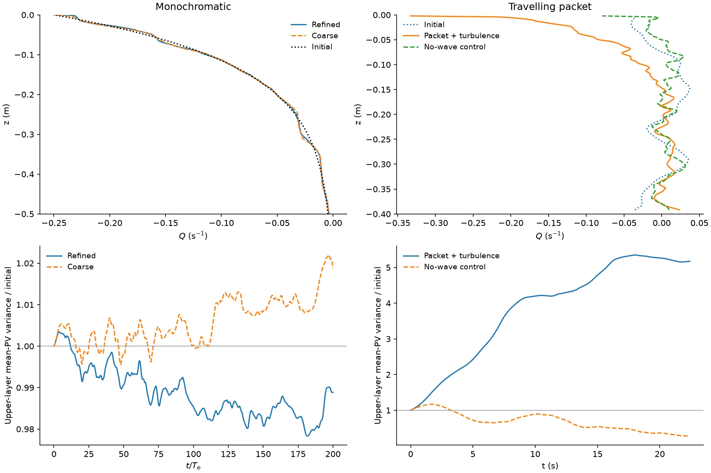
In the refined monochromatic run the upper-layer rms Q gradient is 1.004 of its initial value. Only 3.15% of that layer satisfies |Qz(final)| < 0.2|Qz(initial)|. The upper 0.125 m has a modest variance reduction to 0.925, while the upper 0.25 m remains at 0.989; this does not demonstrate a broad staircase. Thin or deeper mixed patches are not excluded by that conclusion.
In the packet, the upper 0.25 m mean-profile variance grows by a factor of 5.17, and its rms gradient by 8.20. A subsurface band, −0.375 < z < −0.125 m, does flatten, but flattening also occurs in the control and the reduced PV is strongly sourced. That observation alone is not evidence for conservative PV homogenization organizing the surface current.
PV budgets and the numerical limitation
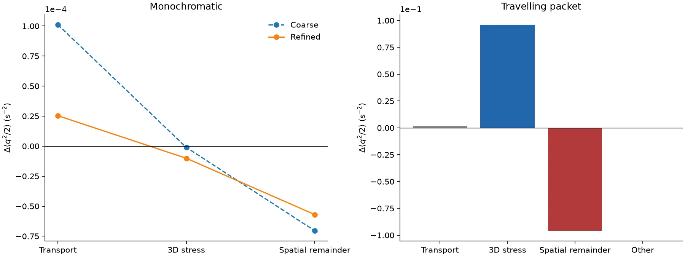
For refined monochromatic waves, transport contributes +2.54 × 10⁻⁵ s⁻², 3D terms −1.01 × 10⁻⁵ s⁻², and the spatial remainder −5.70 × 10⁻⁵ s⁻², yielding −4.18 × 10⁻⁵ s⁻². The net change has the opposite sign at coarse resolution. A quantitatively converged physical PV-mixing balance is therefore not established.
For the packet, 3D production (+0.0961 s⁻²) nearly balances the spatial remainder (−0.0959 s⁻²). The explicit time-dependent-Stokes and background-change contributions cancel to their measured accuracy. Exact closure does not establish physical PV conservation or resolve the fine-scale PV dissipation.
Spectra: distinguish anisotropy, inverse transfer, and a barrier
These are separate claims. A visible jet or a strong K = 0 component establishes neither a constant-flux inverse cascade nor a wave-induced exclusion region. The spectra below use the actual deep-water profile, with the corresponding horizontal-velocity field directly above each spectrum.
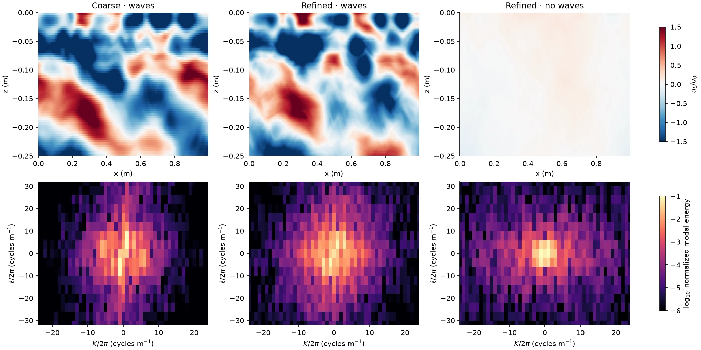
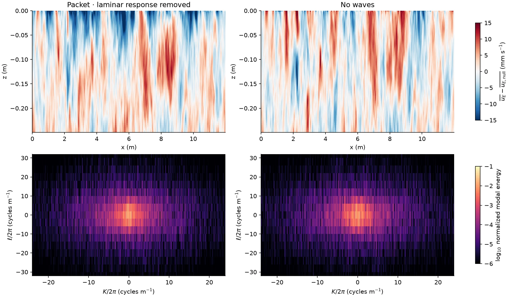
A conservative angular check excludes K = 0 and compares energy within 30° of the horizontal-wavenumber axis, |K| ≥ √3|ℓ|, in the 4–16 cycles m⁻¹ radial band. Over 100–200 Te, the upper-0.25 m fractions are 12.0% coarse waves, 14.2% refined waves, and 6.5% refined control. For the packet over 11.2–22.4 s, the residual and control are both approximately 9.5%. This particular measure does not reveal a wave-induced horizontal-sector depletion relative to the controls. It is a diagnostic, not a universal falsification of a depth-dependent spectral barrier.
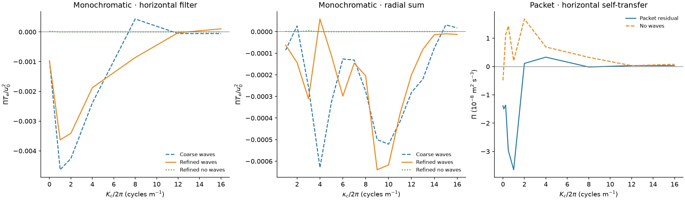
The monochromatic horizontal transfer is inverse at cutoffs 1, 2 and 4 cycles m⁻¹ at both resolutions. This is positive evidence of organization toward larger horizontal scales. Its depth restriction, reference-operator definition, cutoff dependence and the non-flat radial transfer prevent upgrading it to a resolved isotropic constant-flux cascade or a measured sharp wave barrier. The packet's reduced-field transfer is not a closed budget for its predominantly 3D energy.
Why finer grids did not automatically produce a cleaner local spectrum
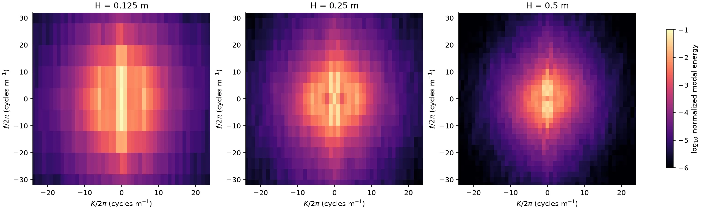
The vertical bin spacing is 1/H: respectively 8, 4 and 2 cycles m⁻¹. Doubling the number of cells does not change that spacing. Meanwhile |Q₀,z| varies across these windows by factors exp(8H) = 2.72, 7.39 and 54.6. A narrow window is more local but has few vertical Fourier bins; a broad one resolves more bins but combines substantially different wave environments. The narrowest window has only the ℓ = 0 row inside a band below 8 cycles m⁻¹, making an apparent directional concentration there a binning artifact.
The packet also has limited interaction time: its effective squared-amplitude Gaussian exposure, √π × 2.8 s ≈ 4.96 s, is only about 0.42 of the nominal 0.20 m / 0.017 m s⁻¹ turnover time. A developed inverse cascade during one passage is not guaranteed.
Are vortex waves present, and do they carry the jet-driving stress?
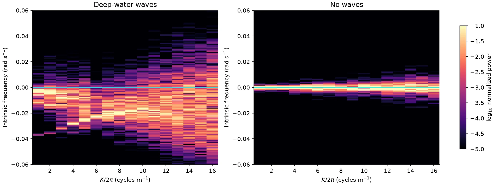
For positive horizontal modes 1–16 cycles m⁻¹, 99.4–99.9% of the resolved early-time phase power has negative intrinsic frequency across four sampled depths in the refined wave run (10–50 Te). Late-time fractions are 99.5–99.9%, while the late control fractions range from 33% to 69%. Frequencies within two frequency bins of zero are excluded. The early resolved power represents 86–97% of total sampled phase power. The mean Qz remains negative at the sampled late-time depths.
This supports the predicted vortex-wave phase direction during formation and later evolution. It does not yet independently measure vertical group velocity, identify a source layer, or show absorption at a critical level. Likewise, reconstructing ⟨ũw̃⟩ from its cospectrum is a Fourier identity: it verifies normalization, not a wave-carrier interpretation.
Verdict on the full momentum-radiation argument: resolved eddies drive the monochromatic jets and vortex-wave-like phase propagation is present, but the link between those waves, outward radiation, and the observed jet locations is only partially tested. For the packet, the dominant diagnosed stress is 3D; its short, inhomogeneous record does not establish a stationary 2D vortex-wave dispersion relation.
What has improved, and what remains unresolved
The earlier centered-advection 2D experiments had substantial late near-grid energy accumulation and could not serve as converged mechanism tests. The completed 3D WENO experiments analyzed here are separate runs.
At 200 Te, full-3D Lagrangian energy above 80% of any coordinate Nyquist wavenumber is 0.0083% coarse and 0.0044% refined for monochromatic waves. For the packet, the corresponding horizontal full-3D Eulerian fraction is 0.105% at 22.4 s. No uniform-grid vertical Fourier tail is assigned to its stretched grid. These are energy-tail checks, not proof that derivative-sensitive PV statistics or all transfers have converged.
The monochromatic mean-momentum reconstruction error is 6.4 × 10⁻¹⁵ relative to the observed profile change; the packet's is 2.8 × 10⁻⁹. These small residuals validate the bookkeeping. The physical conclusions instead rely on separately identified terms, controls, the monochromatic refinement comparison, and explicit limits on the PV and spectral tests.
Methods, provenance and supporting results
Simulation specifications and definitions
| Monochromatic | Packet case 1.D | |
|---|---|---|
| Stokes profile | uˢ = 0.03125 exp(8z) m s⁻¹; k = 4 m⁻¹; decay depth 0.125 m; steady and horizontal. | Peak uˢ = 0.0497094 m s⁻¹; k = 9.3 m⁻¹; depth factor exp(18.6z); Gaussian amplitude width 1.43787 m; group speed 0.513527 m s⁻¹. Original vertical Stokes component and time-dependent forcing retained. |
| Domain and grid | 1 × 0.5 × 1 m; 256 × 128 × 256 and 512 × 256 × 512. kH = 4. | 12 × 0.8 × 0.4 m; 1536 × 128 × 128, stretched vertically. kH = 3.72. |
| Initial state | Seed 1; nine-cycle ring; u₀ = 1.56360 × 10⁻⁴ m s⁻¹; 1% 3D perturbation; zero Lagrangian mean. | Original calibrated 3D Eulerian turbulence, target passage rms (17, 17, 13) mm s⁻¹ and integral scale 0.20 m; seed 1; original 2 s preconditioning, pressure projection and transport removal. |
| Numerics and duration | Float64 WENO9 / RK3; 200 Te, Te = 113.0973 s; matched no-wave controls at both resolutions. | Float32 WENO5 / RK3, fixed Δt = 0.02 s; 22.4 s; matched no-wave turbulence and packet-only controls. |
| Boundaries | Periodic horizontal directions; impermeable, free-slip vertical boundaries for the model's Lagrangian velocity. | |
Transverse averaging is over y. UL,E additionally average over the periodic x domain. Mean-current energy is the depth mean of U²/2. Transverse-dependent energy is the difference between full-3D energy and energy of the y-mean velocity, using native grid weights. Spectral plots concern the in-plane y-mean components, not all 3D energy.
aᵢ = ∫ ΔUᵢ(z) ΔU(z) dz / ∫ [ΔU(z)]² dz
The momentum-profile fraction aᵢ is a projection. Mean-energy allocation instead contracts each recorded momentum increment with the midpoint of the measured mean velocity before and after that output step. Monochromatic budgets are recorded every integration step; the packet allocation uses cumulative increments at its dense output times. The packet Lagrangian conversion additionally uses its time-independent whole-tank mean Stokes drift.
Reference-transfer checks verify native-grid Parseval normalization, conservative centered-advection work, agreement between four horizontal filtered-transfer identities and independently summed modal work, stress-cospectrum normalization, and a manufactured homogenized-PV profile. These tests do not turn a reference transfer into the complete numerical energy budget.
PV layer integrals use native physical-depth weights and exclude boundary points where the interior q diagnostic is undefined. The “flat” metric uses 20% of the local initial gradient, excluding near-zero initial gradients. Packet-only normalized PV ratios are not used because their initial denominators are at roundoff level. Raw packet-only second-moment contributions are retained in the supporting budget table.
Phase analysis uses the convention exp[i(Kx + ℓz − Ωt)], removes measured mean Doppler advection before the temporal transform, and excludes |Ω| below two frequency bins in sign statistics. Interpolation of saved phase samples creates no additional temporal bandwidth. Depth-window spectra use physical depth, a Hann taper, native horizontal Fourier bins, no zero-padding, and explicit separation of K = 0 from eddy-sector metrics.
The three proposed mechanisms follow the distinctions discussed by Vallis, Matilsky & Nicolas (2026). The packet reproduces the original periodic scenario in the NumericalWaveTanks anti-Stokes gallery, with source pinned to commit 9ff503c. All conclusions here concern these completed single-seed runs, not an ensemble or an asymptotic theorem.
- Machine-readable assessment
- Momentum contributions
- Paired packet momentum definition and fractions
- PV layer metrics
- PV second-moment budgets
- Spectral angular metrics and bin spacing
- Time-averaged horizontal transfers
- Late-time phase statistics
- Full-state energy tails and early phases
- Current formation and transfer time series
- Read-only analysis source and diagnostic definitions
- Artifact checksums and provenance